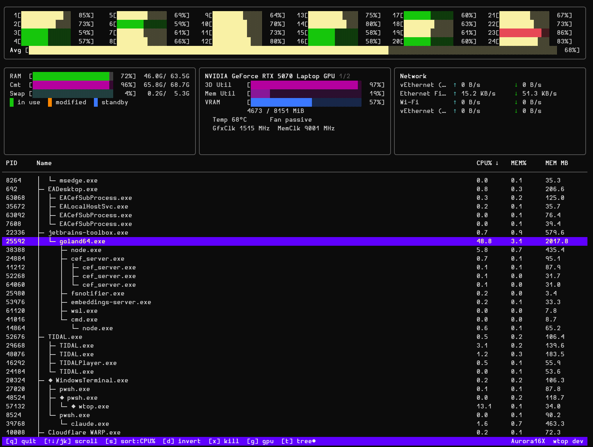

A self-contained, single-binary system monitor for Windows — inspired by htop. CPU, memory, GPU, network, and processes. Live. In your terminal.

Six panels, one binary. Live metrics updated every second across every subsystem that matters.
Per-core utilisation bars in a compact grid. Colour-coded green → yellow → red as load climbs. Aggregate total always pinned at the bottom.
RAM and swap in GiB with htop-style colour layering — used, cached, and buffered pages each in a distinct colour so you know exactly where memory is going.
Automatic detection: full telemetry (util, VRAM, temp, power, clocks, fan, P-state) from NVIDIA via nvidia-smi, or utilisation from AMD/Intel via Get-Counter.
Per-interface send/receive rates in real time. Loopback and zero-traffic interfaces hidden automatically. Delta-per-second calculation handles clock resets cleanly.
Top processes sortable by CPU%, memory, PID, or name. Kill any selected process with a confirmation step. Keyboard navigation throughout.
Single statically-linked binary with no installer, no runtime, and no admin rights to run. CGO-free. Just download wtop.exe and go.
Every action is one keypress away. No mouse. No menus.
| Key | Action |
|---|---|
| ↑ / ↓ or k / j | Scroll process list |
| s | Cycle sort column — CPU% → Mem MB → PID → Name |
| d | Reverse sort order |
| g | Cycle between GPUs (when multiple are detected) |
| x | Kill selected process — asks for confirmation |
| y / n / Esc | Confirm or cancel kill |
| q / Ctrl+C | Quit |
Pre-built binaries for amd64 and arm64. Or build from source in one command.
Download the latest release and run:
# No installer needed
.\wtop-v1.0.0-windows-amd64.exe
Build from source (Go 1.26+ required):
git clone https://github.com/michaelsanford/wtop cd wtop go build -o wtop.exe ./cmd/wtop/ .\wtop.exe
Every release is built reproducibly in GitHub Actions and ships with a complete audit trail.
Full dependency inventory in JSON format — wtop-vX.Y.Z-sbom.cdx.json — attached to every release.
Keyless signature via Sigstore. A .bundle file ships with each binary for offline verification.
GitHub Actions attestation links each binary to its exact source commit and workflow run. Verify with gh attestation verify.
# Verify GitHub Actions build provenance gh attestation verify wtop-v1.0.0-windows-amd64.exe \ --repo michaelsanford/wtop # Verify Sigstore cosign bundle cosign verify-blob wtop-v1.0.0-windows-amd64.exe \ --bundle wtop-v1.0.0-windows-amd64.exe.bundle \ --certificate-identity-regexp "https://github.com/michaelsanford/wtop" \ --certificate-oidc-issuer https://token.actions.githubusercontent.com